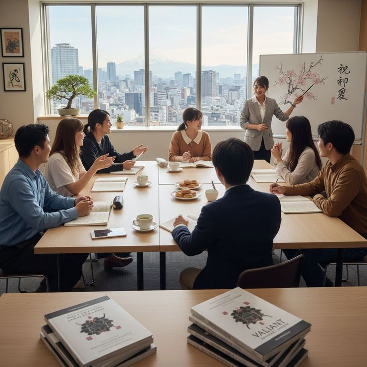

Dari pelatihan kerja tersertifikasi ke Jepang hingga pendidikan dan penempatan kerja di kapal pesiar kelas dunia, kami hadir dengan standar internasional dan pendampingan penuh.
Program pelatihan intensif untuk menjadi awak kapal pesiar profesional bersertifikasi internasional. Lulusan kami terserap di perusahaan kapal pesiar global seperti Royal Caribbean, MSC Cruises, Carnival, dan Norwegian Cruise Line.
3 bulan (480 jam) + Praktik simulasi kapal & magang opsional
STCW, Basic Safety, Crowd Management, dll. + Sertifikat kompetensi LPK
Program resmi pemagangan (TITP) dan Specified Skilled Worker (SSW) ke Jepang. Pelatihan bahasa, budaya kerja, dan keterampilan teknis sesuai standar industri Jepang. Dukungan penuh hingga bekerja di perusahaan mitra terpercaya.
Perhotelan, Manufaktur, Perawatan lansia (Kaigo), Restoran, Konstruksi
4 - 6 bulan (intensif) + pemberangkatan & monitoring kerja
Kurikulum berbasis standar internasional, pelatihan praktik, dan penempatan kerja global
Kami menyediakan dua jalur resmi yang terlisensi Kemnaker dan disponsori oleh organisasi pendukung di Jepang (JITCO).

Kualitas, legalitas, dan pendampingan penuh untuk kesuksesan Anda
LPK resmi Kemnaker, mitra JITCO untuk program Jepang, serta mitra asosiasi kapal pesiar internasional.
Tim call center dan pendamping siaga selama pelatihan, pemberangkatan, dan selama bekerja di luar negeri.
Program pelatihan Jepang: garansi penempatan kerja atau pengembalian biaya 90% (syarat berlaku).
Kapal Pesiar Premium
Peserta Terlatih ke Jepang
Sertifikasi Resmi
Perusahaan Mitra di Jepang
Isi formulir di samping, tim konselor kami akan menghubungi Anda untuk konsultasi gratis dan penempatan program yang sesuai dengan minat Anda.